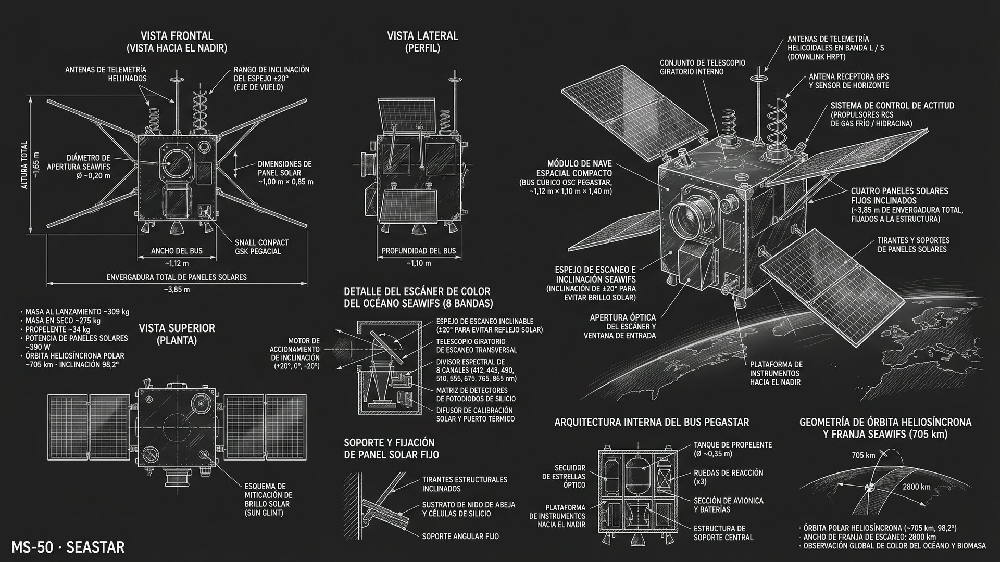

SeaStar (SeaWiFS)

Fue el sensor de color del océano a bordo del satélite SeaStar, después OrbView-2, lanzado el 1 de agosto de 1997 en un lanzamiento aéreo. Midió la concentración de clorofila y la producción marina durante más de trece años, hasta que se perdió el contacto con el satélite en diciembre de 2010.
En diciembre de 2010 el satélite, ya renombrado OrbView-2, perdió las comunicaciones con las estaciones de tierra y la misión se concluyó formalmente en febrero de 2011. Operó más de trece años frente a una vida de diseño de cinco, dejando uno de los registros continuos de biología oceánica más completos disponibles. Personas: Gene Carl Feldman
Lo que hizo
- Datos globales desde el 18 de septiembre de 1997 — Tras 32 encendidos que elevaron la órbita desde los 278 km de aparcamiento hasta los 705 km, el instrumento pasó a operación rutinaria el 18 de septiembre de 1997 y empezó a distribuir datos globales de color del océano a 4 km.
- Trece años de registro biológico del océano — Diseñado para un mínimo de cinco años, SeaWiFS operó más de trece: cartografió la verdura del océano, siguió la estacionalidad de los blooms y la respuesta del plancton a El Niño y La Niña, y sirvió de preparación técnica para MODIS y VIIRS.
Modelo 3D, chat y cómic, en tres idiomas
Fuentes
- science.nasa.gov/mission/seawifs/
- oceancolor.gsfc.nasa.gov/SeaWiFS/SEASTAR/SPACECRAFT.html
- www.earthdata.nasa.gov/news/seawifs-fully-operational
Ver el índice completo · Proyecto del NASA Space Apps Challenge 2026. Contenido con fuentes citadas.